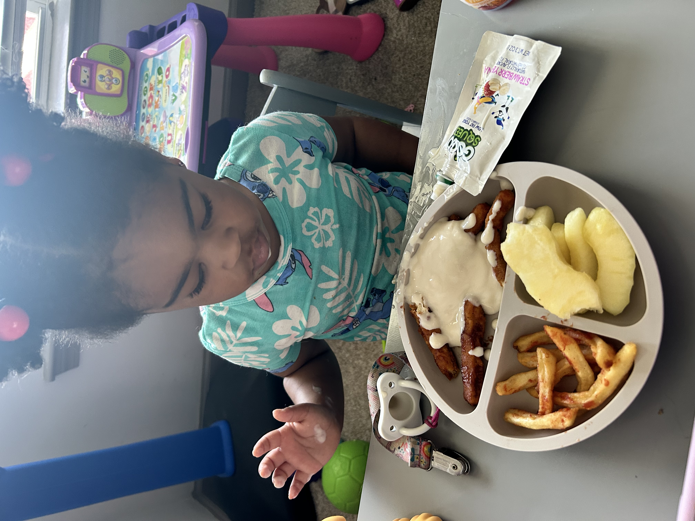
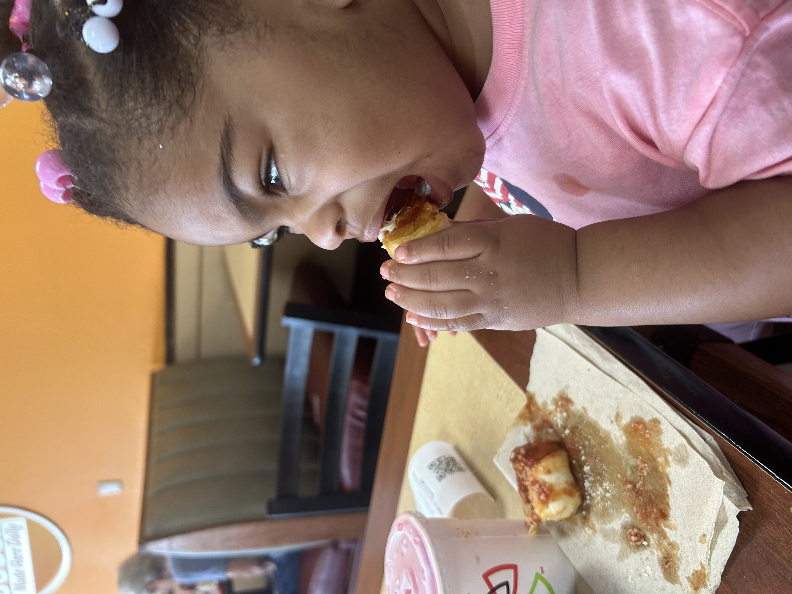
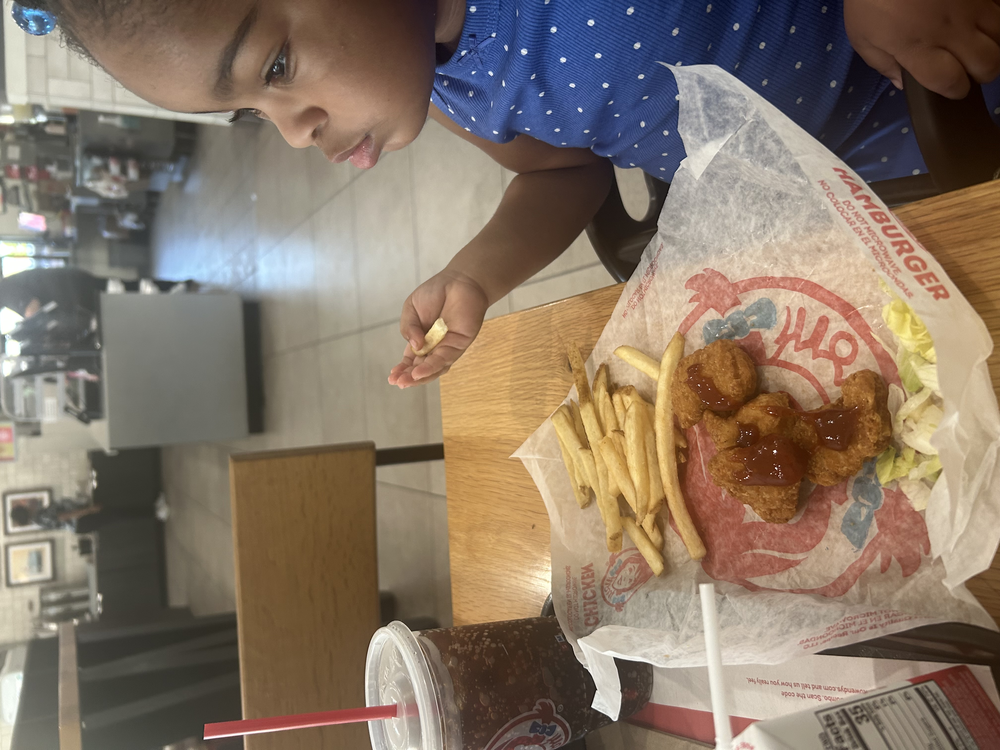
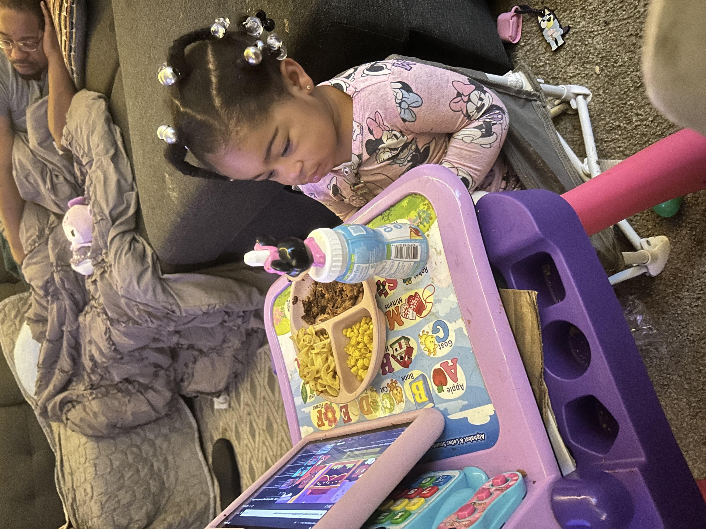

I Love Food!
Epiphany loves to eat and enjoys many different kinds of foods especially fruit and healthy meals. She is not a picky eater and is always excited to try new foods and explore different flavors. One funny habit she has is mixing all of her food together even foods that do not seem like they should go together like chicken and yogurt. She enjoys everything from fresh fruit to full meals and often surprises us with what she likes. Her love for food and willingness to try new things shows how curious and adventurous she is.
Epiphany Enjoying Her Favorite Foods



